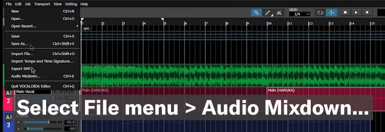

Amplify Your Waves To all creators who inspire the world with their music
Add lyrics and vocal melodies to your wellspring of musical imagination.
VOCALOID is an AI-based technology created by Yamaha to fully support the musical expressiveness of creators from all perspectives.
This product lets you express your ideas on the spot in vocal form while producing music.
LEARN
Download and install
Vocaloid is a software that is paid, however, you may get the trial version here
Just download your respective version and follow the instructions to install the software.
Editor and UI
Before we fully start, lets learn some terminology!
- Vocaloid: A voice synthesizer software
- Voicebank: Recorded voices of a person used for synthesizing
- MIDI: A file type extension produced by voicebanks
Exporting

After you are done with your project, you can export it by pressing audio mixdown, choose the location where you want to save your file and Vocaloid will export it as a .wav file into that location!
IMPACT
Hatsune Miku

Hatsune Miku is one of the most famous and beloved Vocaloid characters. She is a virtual idol and the face of Vocaloid software, created by Crypton Future Media. With her iconic turquoise twin-tails and captivating performances, Hatsune Miku has captured the hearts of fans worldwide. She has become a symbol of the potential of AI and virtual characters in the music industry, inspiring countless artists and creators to explore new possibilities in music and performance.
Major Events
Vocaloid has had a significant impact on the music industry, leading to the emergence of virtual idols and virtual concerts. Major events like the "Hatsune Miku Magical Mirai" and "Kagamine Rin & Len Live Party" have attracted massive crowds and showcased the power of Vocaloid technology in creating immersive and interactive performances. These events blend cutting-edge technology with creativity, blurring the line between the virtual and real world and pushing the boundaries of what's possible in live entertainment.
Media
Vocaloid has not only revolutionized the music industry but also made a significant impact on various media forms. Virtual idols like Hatsune Miku have appeared in video games, anime, and even collaborated with popular musicians. Her presence in different media has further expanded the reach of Vocaloid technology, making it a prominent cultural phenomenon globally.